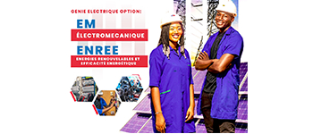

Département Electromécanique
La filière Electromécanique combine les principes de l'électricité et de la mécanique pour former des ingénieurs polyvalents. Vous apprendrez à concevoir et à maintenir des systèmes électromécaniques complexes, allant des robots industriels aux systèmes de production d'énergie. Cette formation vous prépare à des carrières dans divers secteurs, notamment l'automobile, l'aéronautique et les énergies renouvelables.
Cours enseignés :
- Électronique de puissance
- Mécanique des fluides
- Automatique et régulation
- Machines électriques
- Systèmes embarqués
- Robotique industrielle
- Maintenance industrielle